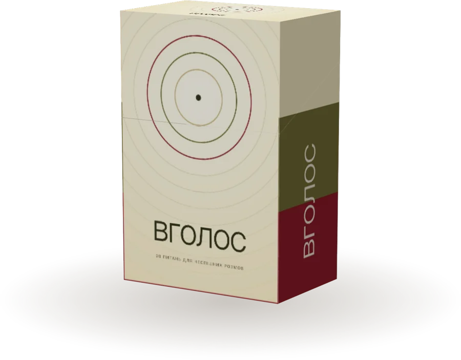

Хто знає людину краще: друг за 10 років чи незнайомець, з яким вона проговорила всю ніч у поїзді?
СпостереженняI
розмовна гра
Тягнете карту й відповідаєте вголос. Без балів, переможців і незручних завдань. Однаково добре з давніми друзями і з людьми, яких бачите вперше.

як грати
Читаєте питання вголос. Можна йти від першого рівня до третього або брати з будь-якого стосу за настроєм.
Думкою, аргументом, спостереженням. Далі долучається хто хоче, і починається розмова.
Питання про людей і світ, а не про вас. Історії з життя доречні, але ніхто не може їх вимагати. Карту можна відкласти без пояснень.
три рівні глибини
По 30 питань на кожен рівень. Перший розігріває, другий змушує задуматись, третій розділяє компанію на табори.
Хто знає людину краще: друг за 10 років чи незнайомець, з яким вона проговорила всю ніч у поїзді?
Робота мрії з колегами, яких терпіти не можеш, чи нудна робота з найкращою командою?
Тобі дають конверт, у якому описано, як мине твій наступний рік. Змінити нічого не можна. Відкриєш?
Спостереження — про людей і буденність. Цінності — про час, гроші й сенс. Дилеми — питання без правильних відповідей.
спробуйте просто зараз
Кілька питань із колоди. Прочитайте вголос тому, хто поруч, і подивіться, що буде.
Що переконує людей сильніше: факти, історія з життя чи людина, яку вони поважають?
Хотілося створити гру, в яку однаково комфортно грати і з друзями, і з незнайомими.
Колись я грала в гру з питаннями, і було напрочуд комфортно серед незнайомих людей. Ніхто не змушував розповідати про себе: ти розкриваєшся через свою думку щодо ситуації.
Нещодавно на вечері з коктейлями нас було 11. Ми класно проводили час, але бракувало чогось, що об'єднало б усіх в одному моменті. Схожої гри в Україні я не знайшла: або для пар, або з розповідями про себе, або з крінжовими завданнями. Тож зробила свою.
Ніна, авторка гри
що в коробці
питання й відповіді
Від двох. Найцікавіше у компанії з 4–8 людей, але працює і вдвох, і за великим столом.
Ні. Питання про людей і світ, відповідати можна думкою. Особисті історії доречні, але тільки якщо самі захочете.
Від 30 хвилин. Фінішу немає: граєте, поки цікаво.
Так, готуємо ще 90 питань. Новини з'являтимуться в Instagram.
Напишіть нам у дірект Instagram @vgolos.game, підкажемо ціну й доставку.
Замовлення приймаємо в Instagram. Там же нові питання й анонси другої колоди.